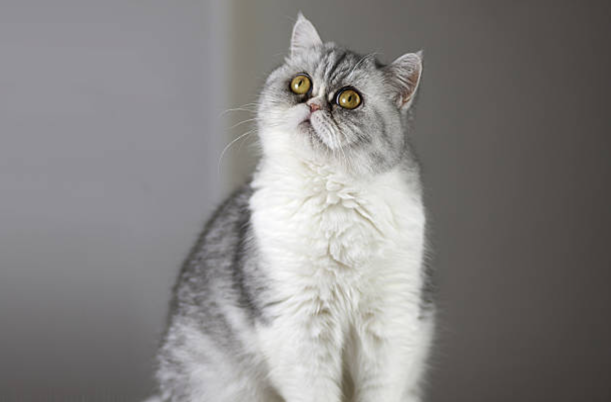
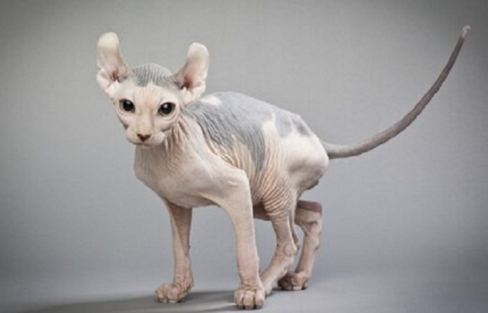
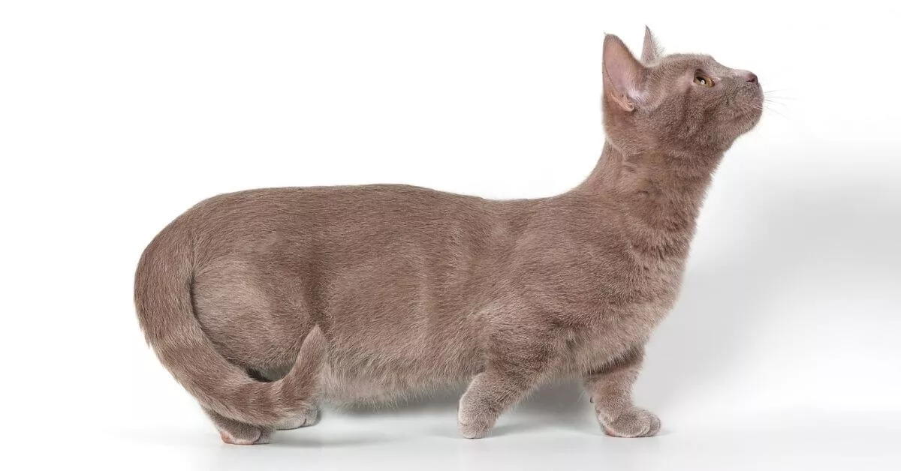

L'exotic shorthair appartient aussi à notre top 10 des chats les plus bizarres du monde, il est né du croisement entre un british shorthair et un américain shorthair. Cette race possède le teint d'un chat persan mais avec le poil court, il est très robuste, a un corps compact et arrondi. Avec ses grands yeux, sa petite truffe, ses petites oreilles, l'exotic shorthair a une expression facial tendre et douce, on peut même avoir l'impression qu'il est triste en certaines occasions. Son pelage est court et dense mais ne requiert pas une énorme quantité de soin car il ne le perd pas beaucoup. Le fait qu'il ne perde pas énormément son pelage est une caractéristique très appréciées des personnes allergiques amoureuses des chats. Cette race de chat a une personnalité tranquille, affectueuse, loyale et amicale. Son caractère n'est pas sans nous rappeler celui des chats persans mais l'exotic shorthair est plus actif, joueur et curieux.

En continuant notre top 10 des chats les plus bizarres du monde, nous arrivons au chat elfe dont les principales caractéristiques sont l'absence de pelage et une extrême intelligence. On les appelle de cette manière pour leur ressemblance avec la créature mythique, ils sont nés du croisement entre un sphinx et un curl américain. Comme ils n'ont pas de poil, ces chats ont besoin d'être lavé plus fréquemment que les autres races de chats. À cause de leur manque de poils, ils ne peuvent pas non plus rester à prendre le soleil un peu trop longtemps. En plus, ce sont des chats qui ont un caractère très sociable et qui se font remarquer par leur vive intelligence.

L'avant dernier de notre top 10 des chats les plus bizarres du monde a gagné sa place dans notre article grâce à une mutation génétique naturelle. C'est un chat de taille moyenne avec les pattes plus courtes que la normale, un peu comme si on avait affaire à un chien saucisse ! Cependant, ils n'ont pas de problème pour pouvoir sauter ou courir comme le reste des races. Cette caractéristique ne leur provoque pas non plus de problème de colonne vertébrale. Malgré des pattes arrières plus grandes que celles de devant, les Munchkins sont très agiles, actifs, joueurs et très tendres, ils peuvent peser entre 2 et 3 kg. Si vous êtes intéressés par les chat les plus petits du monde ne loupez pas notre article Quel est le plus petit chat du monde.
